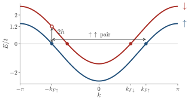

Page 8 of 16 of this session
5.12 Building a spin-triplet superconductor out of a magnet
Since spin-triplet order is so fragile, how could we ever build one on purpose? We will now see that an exchange field moves the bands of the two spins apart. A pair of opposite spins then costs an energy \(2h\), while a pair of two \(\uparrow\) electrons costs nothing. With an attraction, the pairing of equal spins, which is odd in \(k\), can then win, and on a ribbon this state has modes at its edges.
\[\textbf{Spin triplet (odd parity):} \quad \Delta(\mathbf k) = -\Delta(-\mathbf k), \qquad \Delta_{\sigma\sigma'} = +\Delta_{\sigma'\sigma}\ \text{(spin-symmetric)}. \tag{5.12}\]
This is the triplet line of the classification of Section 5.11. A pairing that is symmetric in spin, such as a pair of two \(\uparrow\) electrons, has to be odd in \(\mathbf k\). The other line of the same classification is the spin singlet, which is antisymmetric in spin and even in \(\mathbf k\).
One way to do this is a toy model that has both a ferromagnetic exchange field and an attractive interaction in the same Hamiltonian,
\[H = -t\sum_{\langle ij\rangle,\sigma}c_{i\sigma}^\dagger c_{j\sigma} \;\underbrace{-\, h\sum_i \left(c_{i\uparrow}^\dagger c_{i\uparrow} - c_{i\downarrow}^\dagger c_{i\downarrow}\right)}_{\text{exchange field}} \;+\; \underbrace{U\sum_{\langle ij\rangle} c_{i\sigma}^\dagger c_{j\sigma'}^\dagger c_{j\sigma'}c_{i\sigma}}_{\text{attractive interaction}}, \qquad U<0.\]
If we solve it self-consistently at the mean-field level, both order parameters, the ferromagnetic exchange field and the pairing amplitude, can be nonzero at the same time. The ground state then breaks both time-reversal symmetry, since it is magnetic, and gauge symmetry, since it is superconducting.
The pairing that survives is spin-triplet once the exchange field is of the order of the smallest quasiparticle energy of the singlet, or when only one spin band crosses the Fermi level. The reason is that the exchange field explicitly splits the \(\uparrow\) and \(\downarrow\) Fermi surfaces, and in this way it suppresses the singlet channel, which needs them to be degenerate. Physically, s-wave singlet pairing is usually the leading instability because it can gap the entire Fermi surface, which gives the largest condensation energy. When the exchange field suppresses this channel, a different pairing channel becomes the leading instability instead, which here is the odd-parity, spin-triplet channel, which is effectively p-wave.
An exchange field \(h\) shifts the bands of the two spins in opposite directions,
\[\varepsilon_{\uparrow,\downarrow}(k) = \varepsilon(k) \mp h.\]
The \(\downarrow\) partner of an \(\uparrow\) electron on its Fermi surface sits \(2h\) above the Fermi level, while two \(\uparrow\) electrons sit on the same Fermi surface and do not pay this energy.
The steps The energy of a singlet pair in an exchange field
A singlet pair takes an \(\uparrow\) electron at \(k\) and a \(\downarrow\) electron at \(-k\). We put the \(\uparrow\) electron at its Fermi momentum \(k_{F\uparrow}\), where \(\varepsilon_\uparrow(k_{F\uparrow})=\varepsilon(k_{F\uparrow})-h=0\), meaning that \(\varepsilon(k_{F\uparrow})=h\). The band is even, \(\varepsilon(-k)=\varepsilon(k)\), so the partner has
\[\varepsilon_\downarrow(-k_{F\uparrow}) = \varepsilon(k_{F\uparrow}) + h = 2h.\]
So the partner is \(2h\) above the Fermi level, and the two electrons of the pair cannot both sit at the Fermi level. A pair of two \(\uparrow\) electrons at \(k_{F\uparrow}\) and \(-k_{F\uparrow}\) has \(\varepsilon_\uparrow=0\) for both, so it pays nothing. For the chain of the figure below, \(\varepsilon(k)=-2t\cos k-\mu\) with \(t=1\), \(\mu=0\) and \(h=0.6\), the Fermi momenta are \(k_{F\uparrow}=1.875\) and \(k_{F\downarrow}=1.266\), and the partner sits at \(2h=1.2\).

g3_exchange_chain_bands.py
The most interesting feature of this state appears when we put it on a finite ribbon instead of an infinite plane. The bulk spectrum is gapped, as we expect for a superconductor, but the edges of the ribbon have gapless excitations. A superconductor that is fully gapped in the bulk and gapless at the edge is a signature that we already know from Session 3 and Session 4, through the bulk-boundary correspondence of Section 3.7. These edge modes have a topological origin. They are tied to a finite Chern number of the BdG band structure, in the same way as the edge states of a Chern insulator are tied to its Chern number (3.4).
Notebook check-in: session5.ipynb, “The impact of a spin splitting in an electronic structure” (Reminder), “A spin triplet superconductor” (Core) and “Majorana modes in a spin triplet superconductor” (Challenge). The notebook goes further in “Interaction-induced spin-triplet superconductivity” (Challenge) and “Topological modes in interaction-driven spin triplet superconductors”.
Start from the plain spin-split band structure, with only an exchange field, to build intuition. Then run the self-consistency loop for the model above and check that a spin-triplet \(\Delta\) emerges. Move to a ribbon geometry and find the gapless edge modes described here, and then, in the later challenge sections of the notebook, connect them to the Majorana physics of Section 5.15 to Section 5.17.
In magic-angle twisted trilayer graphene, superconductivity survives in-plane magnetic fields above \(10\) T. The authors say that this is a violation of the Pauli limit of conventional spin-singlet superconductors by a factor of 2 to 3. They see this violation over the whole superconducting phase, and they also see re-entrant superconductivity at large magnetic fields. They write that these findings suggest that the superconductivity is likely driven by a mechanism that gives non-spin-singlet Cooper pairs. The measurement is in this article, which is also the one given in the notebook session5.ipynb. Our own reading is that an in-plane field acts on the spins as the exchange field \(h\) of this page, so a singlet pair pays the mismatch \(2h\). In the BCS theory at zero temperature, the singlet state loses to a polarized normal state when \(h=\mu_BB\) reaches about \(\Delta/\sqrt2\). Here \(\Delta\) is the pairing amplitude of the singlet at zero field, the smallest quasiparticle energy, which is half of the gap \(2|\Delta|\) between the two branches, and this field is the Pauli limit. At \(10\) T and with \(g=2\) the Zeeman energy is \(h=\mu_BB=0.58\) meV.
The two spin bands of a chain are
\[\varepsilon_\sigma(k)=-2t\cos k-\mu\mp h,\]
with the upper sign for \(\uparrow\). Why does \(h\) suppress \(s\)-wave singlet pairing and not \(\uparrow\uparrow\) pairing?
Show the answers
- A. ✗ False
This is false. The exchange field \(-h(n_\uparrow-n_\downarrow)\) conserves the particle number, so \(c\to e^{i\varphi}c\) is still a symmetry of it. Gauge symmetry is broken only by the pairing itself.
- B. ✓ True
This is true. The field shifts the two spin bands by \(\mp h\). The \(\downarrow\) partner of an \(\uparrow\) electron on its Fermi surface sits \(2h\) above the Fermi level, while two \(\uparrow\) electrons share one band.
- C. ✗ False
This is false. In the field the \(\uparrow\) band is \(-2t\cos k-\mu-h\), which still has the bandwidth \(4t\). The \(\uparrow\) electrons move normally, and they can form a Fermi surface to pair on.
Each plot shows the bands of a chain with \(\mu=-1.5t\) and an exchange field \(h\). Blue is spin \(\uparrow\) and red is spin \(\downarrow\). In which chain can only \(\uparrow\uparrow\) pairs form at the Fermi level?
Show the answers
- A. ✗ False
This is false. Here \(h=0.2t\), and both bands cross \(E=0\), at \(k_{F\uparrow}=0.863\) and \(k_{F\downarrow}=0.555\). So \(\downarrow\downarrow\) pairs can also form at the Fermi level, and an \(\uparrow\downarrow\) pair has the mismatch \(2h=0.4t\).
- B. ✓ True
This is true. Here \(h=1.2t\), and only the \(\uparrow\) band crosses \(E=0\), at \(k_{F\uparrow}=1.420\). The bottom of the \(\downarrow\) band is \(0.7t\) above the Fermi level, so every electron at the Fermi level has spin \(\uparrow\).
- C. ✗ False
This is false. Here \(h=-1.2t\), a field in the opposite direction, and only the \(\downarrow\) band crosses \(E=0\). The bottom of the \(\uparrow\) band is \(0.7t\) above the Fermi level, so the pairs at the Fermi level are \(\downarrow\downarrow\) pairs.
A chain has the bands \(\varepsilon_\sigma(k)=-2t\cos k-\mu\mp h\), with the upper sign for \(\uparrow\), \(t=1\), \(\mu=0\) and \(h=0.5\). Find \(k_{F\uparrow}\) and \(k_{F\downarrow}\). Then find the energy of the \(\downarrow\) partner at \(-k_{F\uparrow}\) of an \(\uparrow\) electron at \(k_{F\uparrow}\).
Solution
The \(\uparrow\) band crosses zero where \(-2\cos k-0.5=0\), so \(\cos k_{F\uparrow}=-0.25\) and \(k_{F\uparrow}=1.823\). The \(\downarrow\) band crosses zero where \(-2\cos k+0.5=0\), so \(\cos k_{F\downarrow}=0.25\) and \(k_{F\downarrow}=1.318\). The two Fermi momenta differ by \(0.505\), so the \(\downarrow\) state at \(-k_{F\uparrow}\) is not at the Fermi level. Its energy is
\[\varepsilon_\downarrow(-k_{F\uparrow}) = -2\cos k_{F\uparrow}+0.5 = 0.5+0.5 = 1.0,\]
which is \(2h\). In a material the Zeeman energy of a magnetic field plays the role of \(h\). So a field gives the same mismatch to a singlet pair, and this is the origin of the Pauli limit of the box above.
Try it. In the cell, the line h.add_exchange([0.,0.,1.0]) splits the two spin bands of the chain. Change 1.0 to 2.0. The two bands move apart from 2 to 4 at a fixed momentum. At 1.0 each spin has its own Fermi momentum, and at 2.0 each band touches zero energy only at its edge.
- In Section 5.14 we compute the Chern number of the BdG bands and see why a chiral \(p\)-wave superconductor has edge modes.
- In Section 5.18 a magnet and an \(s\)-wave superconductor are put together again, on the helical edge of a quantum spin Hall insulator, to give Majorana zero modes.
- In Section 9.8 a vacancy in a chiral spin-triplet superconductor hosts a mode inside the gap, because of the same Chern number.